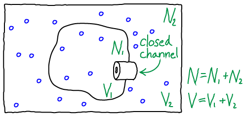

$
\newcommand{\comb}[1]{{#1}^{\mathrm{comb}}}
\newcommand{\conc}[1]{[\mathrm{#1}]}
\newcommand{\conceq}[1]{[\mathrm{#1}]^{\mathrm{eq}}}
\newcommand{\dee}{\partial}
\newcommand{\eq}[1]{{#1}^{\mathrm{eq}}}
\newcommand{\fidl}{F^{\mathrm{idl}}}
\newcommand{\idl}[1]{{#1}^{\mathrm{idl}}}
\newcommand{\kcat}{k_{\mathrm{cat}}}
\newcommand{\kdt}{k_{\mathrm{dt}}}
\newcommand{\kdtsol}{k^{\mathrm{sol}}_{\mathrm{dt}}}
\newcommand{\kkeq}{K^{\mathrm{eq}}}
\newcommand{\kmmon}{\kon^{\mathrm{ES}}}
\newcommand{\kmmoff}{\koff^{\mathrm{ES}}}
\newcommand{\kconf}{k_{\mathrm{conf}}}
\newcommand{\koff}{k_{\mathrm{off}}}
\newcommand{\kon}{k_{\mathrm{on}}}
\newcommand{\ktd}{k_{\mathrm{td}}}
\newcommand{\ktdsol}{k^{\mathrm{sol}}_{\mathrm{td}}}
\newcommand{\rn}[1]{\mathrm{r}^N_{#1}}
\newcommand{\ss}{\mathrm{SS}}
\newcommand{\totsub}[1]{{#1}_{\mathrm{tot}}}
\newcommand{\totsup}[1]{{#1}^{\mathrm{tot}}}
%\newcommand{\ztot}{Z^{\mathrm{tot}}}
$
The Free Energy in a Concentration Gradient
One key way the cell stores free energy is by having different concentrations of molecules in different "compartments" - e.g., extra-cellular vs. intracellular or in an organelle compared to cytoplasm.
Here, we will study the simplest example of such a gradient, differing concentrations of ideal gas molecules across an idealized rigid membrane.
Elsewhere, we consider a simple model of ion concentration gradient across a membrane.
Two ideal gases separated by a barrier

Analyzing the model depicted above will enable us to understand free energy storage in a concentration gradient, but the basic ideas generalize to activated carriers as well.
To be precise, the model consists of $N$ non-interacting atoms in the volume $V$ maintained at constant temperature $T$.
Beyond the simple ideal gas studied elsewhere, our present system is divided into two compartments by a rigid "membrane," with $V_1$ the volume of the inner compartment and $V_2$ the outer volume such that $V_1 + V_2 = V$.
Similarly, there are $N_1$ atoms in the inner compartment and $N_2$ outside, with $N_1 + N_2 = N$.
Although particles could pass through the channel shown in the figure, we assume it is closed so that $N_1$ and $N_2$ are constant.
A quick mass-action analysis
We can derive the key result for this system very quickly using a mass action "thought experiment".
Our simple kinetic analysis will provide a key reference when we delve into some specific limitations of the mass-action picture in the context of ionic gradients
Instead of our original system, we consider the leaky cell or organelle shown above.
The leak should be considered a simple hole (unlike a channel, which is expected to interact strongly with molecules passing through it).
Hence the inside-to-outside rate constant $k_{12}$ for the leak/hole must be equal to the outside-to-inside rate constant $k_{21}$.
After all, if the hole is large enough the "atoms" will not interact with the membrane at all - or if they do, the effects should be symmetric.
In equilibrium, we know that the total number of events in each direction will match: $\conc{1} \, k_{12} = \conc{2} \, k_{21}$.
Cancelling the equal rates on both sides of this relation, we find that the equilibrium concentrations must be equal inside and outside:
\begin{equation}
\label{eqleak}
\conceq{1} = \conceq{2}.
\end{equation}
Deriving this result thermodynamically in a careful way requires more effort (see below).
This equilbrium result for the leaky condition actually tell us something about the channel rates.
Because the channel is a passive element that uses no energy, it cannot change the (equal) equilibrium concentrations just derived.
Hence, applying the principle of detailed balance to the channel (which implies the flows through the channel must be equal and opposite) we see that the channel rate constants must be equal in both directions.
This perhaps obvious result only holds for a channel separating two systems with no driving force or external field applied - a condition which breaks down in the case of trans-membrane ionic gradients.
Deriving the free energy
Because we have non-interacting ("ideal") particles which cannot exchange across the membrane, the total free energy for the combined systems $\comb{F}$ is simply the sum of the two free energies calculated independently for the two systems.
(From the probability point of view embedded in the calculation of a partition function - see below - the lack interactions implies statistical independence and hence factorizability of the full-system partition function into those for the two systems.)
We have
\begin{equation}
\comb{F}(N_1, N_2) = \fidl(N_1, V_1, T) + \fidl(N_2, V_2, T) ,
\end{equation}
where $\fidl$ is defined in the ideal gas page.
We have omitted the $V_1$, $V_2$, and $T$ dependence in $\comb{F}$ because these will be held constant throughout.
Substituting in for $\fidl$, we have
\begin{align}
\comb{F}(N_1, N_2) = &
N_1 \, k_B T \ln \frac{N_1 \, \lambda^3}{V_1} + \, N_2 \, k_B T \ln \frac{N_2 \, \lambda^3}{V_2} . \\
\end{align}
Noting that $N_2 = N - N_1$, we can rewrite this further as
\begin{align}
\comb{F} (N_1, N - N_1) =
& N_1 \, k_B T \ln \frac{N_1 \, \lambda^3}{V_1} \nonumber \\
& + \, (N - N_1) \, k_B T \ln \frac{(N - N_1) \, \lambda^3}{V_2} .
\label{fcombo}
\end{align}
Eq. \eqref{fcombo} is the free energy as a function of the number of particles inside the membrane (volume $V_1$).
If we open the channel and allow exchange of atoms between the compartments, the value of $N_1$ can change.
The probability of having $N_1$ atoms in $V_1$ is proportional to the Boltzmann factor of the free energy:
\begin{equation}
\label{ftoprob}
p(N_1) \propto e^{ - \left.\comb{F}(N_1, \, N - N_1) \right/ k_B T }
\end{equation}
The most probable $N_1$ value therefore can be found by determining the minimum of $\comb{F}$.
This will represent the equilibrium point in the thermodynamic limit (very large $N$ - when fluctuations about the most probable $N_1$ will be very small compared to $N_1$ itself).
We set $\dee \comb{F} / \dee N_1 = 0$ in Eq. \eqref{fcombo}, then re-arrange and cancel terms to find
\begin{equation}
\label{derivzero}
0 = k_B T \ln \frac{N_1 \, \lambda^3}{V_1} - k_B T \ln \frac{(N - N_1) \, \lambda^3}{V_2}
\end{equation}
Combining the terms using the rules of logarithms, followed by exponentiation, we find that
\begin{equation}
\label{eqconc}
\mbox{Equilibrium: } \frac{N_1}{V_1} = \frac{N - N_1}{V_2} = \frac{N_2}{V_2} ,
\end{equation}
where we substitute $N_2 = N - N_1$ to obtain the last equality.
In words, Eq. \eqref{eqconc} shows that the concentrations inside and outside the membrane must match in equilibrium.
You probably knew that already, but we have derived it from statistical/thermodynamic principles.
The next step: Considering ions
Ion concentration gradients can also be analyzed in a similar way.
Work that can be performed
As we move from higher to lower free energy, the system can perform work - if it is coupled to a suitable mechanism for harvesting the work.
The maximum amount of work that can be extracted is equal to the decrease in free energy as sketched above.
In a simple gas system, work could be extracted by placing a turbine at the "channel"/nozzle as the gas flows toward equilibrium.
Models of work extraction which are more pertinent to cell biology are discussed in the transport section.
Passive Transport
In the simplest kind of passive transport, molecules flow down a gradient (from high to low concentration) and that flow is not coupled other processes.
In our technical language, such a process would involve moving from a state of higher to lower free energy (see sketch above) or from lower to higher probability - see Eq. \eqref{ftoprob}.
A deeper look at partition functions and probabilities
A partition function $Z$ is simply a sum of Boltzmann factors for all possible states (configurations - and velocities if considered) of a system.
Because a Boltzmann factor represents a weight (an un-normalized probability), $Z$ is the sum of weights.
Many times, partition functions are easier to work with mathematically, compared to free energies.
Our system is such a case.
Factorizability
Our combined system consists of two independent sub-systems. That is, the state of one system will not affect the other.
Hence the probability for a configuration of the combined system is simply the product of the probabilities for the individual system configurations, and this also holds for the Boltzmann weights summed in Z.
If $U_1$ is the potential energy of the configuration of system 1 and $U_2$ is the energy of system 2, these two are independent, so we have
\begin{equation}
e^{-\totsub{U} / k_B T} = e^{- \left.\left( U_1 + U_2 \right) \right/ k_B T}
= e^{ - U_1 / k_B T } \, e^{ - U_2 / k_B T }
\end{equation}
We can extend this reasoning to calculate the partition function of the combined system, building on what was done for a simple ideal gas.
Denoting the configuration of the combined system by $(\rn{1}, \rn{2})$, the partition function is
\begin{align}
\label{z}
\comb{Z}\!\!&(N_1, N_2) =
\frac{\lambda^{-3N_1}}{N_1!}
\frac{\lambda^{-3N_2}}{N_2!}
\int_{V_1} d\rn{1}
\int_{V_2} d\rn{2}
\, e^{-\left. \totsub{U} \left( \rn{1}, \, \rn{2} \right) \right/ k_B T} \nonumber \\
& =
\left[ \!
\frac{\lambda^{-3N_1}}{N_1!}
\! \!\ \int_{V_1} \! d\rn{1}
\, e^{-\left. U_1 \left( \rn{1} \right) \right/ k_B T}
\! \right]
\! \!
\left[ \!
\frac{\lambda^{-3N_2}}{N_2!}
\! \! \int_{V_2} \! d\rn{2}
\, e^{-\left. U_2 \left( \rn{2} \right) \right/ k_B T}
\! \right]
\nonumber \\
& =
\frac{\lambda^{-3N_1}}{N_1!} V_1^{N_1}
\,
\frac{\lambda^{-3N_2}}{N_2!} V_2^{N_2}
= \idl{Z}(N_1, V_1) \, \idl{Z}(N_2, V_2)
\end{align}
where we evaluated the integrals in the last line, noting $U_1 = U_2 = 0$ for ideal particles, so that each atom's integration yields a factor of $V_i$ depending on which volume $i$ is occupied.
Connecting $Z$ and $F$ to probability
A partition function is the sum of all probability (weights) consistent with the conditions/constraints - such as constant $T$ or $V$.
This allows us to compare the (summed) probabilities consistent with different constraints, such as different $N_1$ values in $\comb{Z}$.
More specifically, recalling that $N_2 = N - N_1$, we have
\begin{equation}
\label{ztoprob}
p(N_1) \propto \comb{Z}(N_1, N - N_1) .
\end{equation}
Because the free energy is nothing other than the log of the partition function ($F = -k_B T \ln Z$ or $Z = \exp{(-F/k_BT)}$), we see that Eqs. \eqref{ztoprob} and \eqref{ftoprob} are equivalent.
The total partition function
Advanced readers may have considered the possibility of the total partition function $\totsup{Z}$, which not only sums over all configurations consistent with a given $N_1$ value - but which also sums over all possible $N_1$ values from $0$ to $N$.
The outcome is rather neat.
We write
\begin{align}
\label{totz}
\totsup{Z} &= \sum_{N_1=0}^N \comb{Z}(N_1, N - N_1) \nonumber \\
&= \sum_{N_1=0}^N \frac{1}{N_1!} \left( \frac{V_1}{\lambda^3} \right)^{N_1}
\frac{1}{(N-N_1)!} \left( \frac{V_2}{\lambda^3} \right)^{(N-N_1)}
\nonumber \\
&= \frac{1}{N!} \sum_{N_1=0}^N \frac{N!}{N_1! \, (N-N_1)!} \left( \frac{V_1}{\lambda^3} \right)^{N_1}
\left( \frac{V_2}{\lambda^3} \right)^{(N-N_1)}
\nonumber \\
&= \frac{1}{N!} \left( \frac{V}{\lambda^3} \right)^{N}
\end{align}
where the last line derives from recognizing the binomial expansion for $(V_1 + V_2)^N$ implicit in the previous line.
You should recognize Eq. \eqref{totz} as the partition function for a simple ideal gas of $N$ atoms in volume $V = V_1 + V_2$.
Indeed, once the channel is open, all atoms can access both volumes and this is the correct result.
Exercises
- Derive Eqs. \eqref{derivzero} and \eqref{eqconc}.